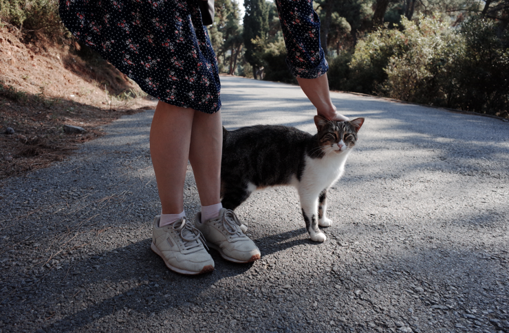

🍃 Что-то про 2021
Не люблю именно итоги подводить, так что это не они, а просто фиксация событий и опыта из прошлого года. Погнали!
Работуха
В начале 2021 сменил работу, впервые в жизни. В Контуре, конечно, было зашибись, но в какой-то момент стало невыносимо скучно, не хватало движения вокруг, было ощущение невыносимой тягучести процессов, да и не нравился тренд с тем, что компания сильно выросла, и появлялась куча бюрократических процессов там, где их не было (типа комиссии по проверке работы комиссии по переводу инженеров на следущей грейд 🤯). Ну и появился интерес — а как там еще бывает?
Было страшновато — потому что новая работа требовала болтать по-английски, писать на питоне, разобраться в незнакомой предметке, да и вообще - я ж ничего, кроме Контура в жизни не видел, вдруг окажется что я ни на что не годен?
В итоге, кажется, что это одно из лучших решений, что было принято в 2020 году. Вновь почувствовал вайб, который чувствовал на старте карьеры — вокруг до фига заряженных и компетентных чуваков, команда заряжена и бежит вперед (недавно сравнивал картинки как выглядела часть продукта в 2019 и 2021 — небо и земля), про вкусовщину и как правильно по классикам логику распихать — поболтать могут, но забривать работающий PR из-за этого никто не будет. При этом нет культа “доделать задачку в выходной”, короче, здоровый рабочий вайб.
Внезапно оказалось, что можно получать конкурентную з/п без долгих переговоров и не взваливая на себя тимлидские задачи связанные с командой и людьми.
Внезапно, можно работать без кучу митингов в неделю! Бой ой бой, я давно столько не решал задачки. А я обожаю решать задачки!
С питоном прошел большой путь от отрицания и гнева до принятия. Где-то не хватает синтаксического сахара после C#, формирование запросов с sqlalchemy это гребанная алхимия и с нуля без доки / примеров я вряд ли напишу сложный запрос, linq, и вменяемые лямбды и анонимные объекты в C# все таки избавляют от кучи бойлерплейта.
Однако плюсы тоже есть — не знаю почему, но PyCharm просто летает в сравнению с Rider (но и умеет он кстати в разы меньше, справедливости ради). Запустить код намного проще, не нужно его компилировать — да и вообще меньше сопротивления накидать простой скрипт или туловину. Там где не нужна типизация, на нее можно положить болт — и отъехать намного быстрее. Можно запатчить любую функцию, и за счет этого легко писать тесты — я добавил в 20 строчек кода имитацию внешнего сервиса в интеграционном тесте, с которым хитрое взаимодействие через REST API и Rabbit MQ, даже устать не успел.
В целом есть субъективное ощущение, что нужно меньше раскачиваться и городить каких-то классов, оберток, DI и прочее — просто пойти и сделать то что нужно. Отчасти, конечно, это не только заслуга питона, но и состояния кодовой базы, в которой редко встретишь развесистые иерархии классов, в основном функции. П — простота! Думаю, что с кодом в новом проекте зачастую разобрался бы и студент без многочисленных WTF, и это, конечно, большой плюс!
Кажется, быстро получилось разогнаться до полной скорости, получить признание коллег. Дальше — интереснее!
Рад еще, что помимо питона в новом году успел пописать на другом новом для меня языке Clojure, это функциональный лисп, который работает как под JVM, так и в браузере. Книжку до конца правда так и не осилил (пока!), зато написал Advent of Code (и записал разбор одной из задач в Контуровском ютубе) и сделал небольшой PR в маленький опенсорсный проект, короче — смог составить некоторое первое впечатление. Супер непривычно, но интерактивная разработка и иммутабельность по-умолчанию втащили, идейно нравится, но пока уходит, имхо, гигантское количество времени на решение вроде бы простых задач. Наверное, стоит посвятить еще некоторое время, и посмотреть на return of investment.
Гейминг
Богатый год!
В начале года пообещал себе, что если после испытательного периода не выгонят ссанными тряпками с новой работы, то подарю себе новую плойку. Кто же знал, что их будет не купить! Однако, мне повезло оставить заявку в Эльдорадо, и перезвонили почти сразу же, и дали час на раздумывание/оплату заказа, и вот, новая PS 5 уже стояла у меня дома. От футуристичного дизайна консоли кайфанул, джойстики с тактильной отдачей тоже кайф.
Но самое крутое, конечно, это игры!
В начале года залипал за Outer Worlds, крутой вайб, приятная игруха для ностальгирующего меня по старым ролевкам.
Наконец прошел Uncharted! Крутая серия, боялся играть с первой части, думал что отпугнет устаревшая графика и механики — ничуть не, наоборот, оказалось лампово, ну и сюжет и персонажи все равно вытягивают все. Хотя первую часть я все таки проклял в нескольких уровнях, которые сложные даже на минимальном уровне сложности.
Попробовал Old World (civ-like игра с упором на управление династией-семьей аля Crusader Kings) — понял что чет я староват для таких медленных игр, где много текста, надо долго разбираться, и фидбек от решений сильно отложенный.
Прошел наконец Horizon: Zero Dawn, шикарная игра, наверное, одна из лучших игр на плойке! Втащил мир и драчки с динозаврами, и что первую половину игры я постоянно огребал, потому что всегда находились противники круче, расслабиться не выйдет. Когда вкачался и научился “готовить” монстров каждого типа, стало намного скучнее, но этот момент настал не быстро. Сайд квесты, к сожалению, отстой — скучные и предсказуемые.
Поиграл в Crypt of the Necrodancer, инди-рогалик где нужно двигаться в ритм музыки. Тот еще угар!
Угорел и прошел на 100% Spider Man — игра крутая, но филлеров многовато, думаю что надо было ограничиться сюжеткой и сайд-квестами.
Battlefield 2042 — хоть обзорщики и ныли, а мне понравился! Хоть и забил быстро, в общем-то, как и с каждой частью серии.
Совсем недавно осилил Deathloop — порадовался как элегантно авторы решили проблему save scum (я раньше любил загружаться в Dishonored, чтобы без потерь стелсом пройти весь уровень), да еще вписали в мир и в сюжет. Фана получил гораздо больше, чем от Dishonored, как раз из-за того что попадал в разные неожиданные ситуации — начинаешь по стелсу всегда, а потом кровь, кишки, и убегаешь через весь уровень, отстреливаясь от врагов. Fun!
В целом намного больше играю на плойке, чем когда был комп, игрули прямо наполняют меня. Консоль сильно уменьшила ментальное сопротивление в сравнении с ПК (на ПК есть соблазн отвлечься на залипание в интернеты, либо проебаться с настройками, либо 100 лет провести за выбором игры в которую хочешь поиграть в стиме). Ну и просто нравится чилить на диване в уютной гостинной, чего уж там.
Путешествия
Сгоняли с Ю в Сочи — сам город дичайший отстой, дорого, не оч красиво, нет нормального городского пляжа, ужасный сервис. А вот в Поляне здорово. Мне кажется, что однажды на подзарядку поеду чилить в горы!
Сгоняли в авантюрное путешествие к любимым Славе и Оксане в Барселону. Внезапно — уехать в Европу не так уж и сложно во времена ковида. Приезжать в место, где есть друзья, в 100 раз круче, еще и ирландские друзья вырвались к нам на выходные, что казалось чем-то невероятным.
Из минусов — кажется, мне не хватило отдыха, когда я бы делал совершенно ничего, все отпуска были привязаны к путешествиям или движухам.
В конце года взял неделю отпуска, и о чудо, давно так восхитительно не отдыхал. Разрешил себе делать ну вообще ничего — что-то читал, играл в какие-то игры, лежал и плевал в потолок, но в итоге восстановился отлично и потом хотел что-то делать.
После такого отпуска уверовал, что я сознательно активно себя заебываю обилием движух в жизни, вместо того чтобы вменяемо отдыхать и скучать. Потому что есть страх прожить скучную жизнь и чего-то не успеть! А в итоге потом лежу, и ничегошеньки мне и не нужно.
Короче — все пиво не выпьешь, все мясо не съешь, хочу в 2022 обрести внутренний дзен и не переугорать с активностями, слушать себя и прочие тренды ментального здоровья.
А еще осознал, что в путешествиях для меня дико важен комфорт. Устаю, когда живу на вписках долгое время. Не готов ехать на танцевальный ивент в +35. Не готов больше жить в Ижевске у родителей (в последнюю поездку арендовал хату на AirBnb). Не готов больше арендовать некрасивые квартиры, даже на короткий срок.
Танцы
Нравится внутреннее ощущение от танцев, в этом году возникло больше желание делать рискованные штуки и отступать от привычной схемы, импровизировать. Наверное, немножечко вырос!
Попробовал сменить роль в танце и немножко потанцевал за фолловера. Офигенное ощущение — оказывается, в танце совсем не скучно, когда лидер делает простые штуки. Хочется научиться вестись прям как скиллу и посмотреть, что из этого выйдет.
Немного сампил — не было системы, но были инсайты про свингауты, быстрые темпы и рамочку. Хочу еще!
Гоняли на фесты в Нижний, Пермь и Москву. Внезапно, уикэнд в Перми зашел больше, чем большой фест в Нижнем, потому что мало людей, уютно и лампово, и никто каблуков на вечеринке не пронзает твои ноги. Комфортно!
Moscow Comes Around теперь официально любимейший ивент — наверное тоже из-за того, что небольшой, но зато с живым музлом. А может потому что бальбоа люблю!
Резко осознал, что не нравится выбор музыки у некоторых диджеев в сообществе — и подиджеил сам. Втащило, хочу еще!
Открытие года, конечно, Большой Джазовый Оркестр Востокова. Услышать биг бенд вживую это мощь!
Здоровье
Здоровью настал некоторый пиздец! Настолько что в апреле меня вышибло из жизни на неделю от слова совсем. А потом еще на пару месяцев резко ухудшилось качество жизни. А что-то осталось со мной до сих пор — например, я больше не могу долго сидеть / лежать / ходить, моя спина не скажет мне спасибо.
Капитанство, но состояние тела сильно влияет на самочувствие, энергию, желание что-то делать, настроение, секс, короче, на все.
На пару месяцев стал безалкогольными и некофейным. А еще исключил кучу всего из своей жизни типа острого и жаренного. Открыл для себя смузи!
Без алкоголя ништяк, в какой-то момент осознал, что он забирает кучу сил, и убивает следующий день — ну или делает его менее красочным.
Пошел к психологу и занялся ментальным здоровьем — потому что осознал что некоторые приколы в черепушке мешают мне жить жизнь здесь и сейчас. Долго откладывал. Зря!
Короч, кажется, что в плане здоровья настал момент, когда я уже не могу не обращать внимания на собственное тело и пренебрать им. Поэтому в топ моих приоритетов в день теперь входит:
- Выспаться
- Поплавать в бассейне — купил абонемент себе в фитнес-клуб, кайфую
- Пойожиться на коврике
- Находить несколько километров за день — самое отстойное что зимой крайне мало получаю от этого удовольствия, когда выхожу на улицу. Но есть идеи как пофиксить.
И где-то потом — работа и другие дела. Теперь так.
Всякое разное
Быть недозагруженным — самое офигенное ощущение в году. Не то чтобы я резко научился говорить “нет” делам и активностям, но когда попадал в такое состояние “а чем я бы хотел заняться сегодня вечером?”, то кайфовал. Вижу в этом потрясающую свободу.
Заебывался несколько раз в течении года, состояние “отменю на хер все что есть и буду просто лежать, пока не отпустит”. Силушек сильно меньше, чем я фантазирую о себе. Жить по тудулисту — не всегда в кайф. Нахожу большое удовольствие в том, чтобы удалять из него задачи, а не добавлять. Стратегия вычитания.
Несколько распалась/разъехалась компания близких друзей. Грущу. Стараюсь поддерживать контакт, находить новых друзей. Не так легко как раньше!
Когда оставался изолированным от людей, то быстро начинаю хандрить. Люблю людей, общение это кайф.
Какие-то пидоры спиздили любимый велик.
Проапгрейдил за год кучу электроники — больше всего кайфую от айпада мини, с ним комфортно чилить на диванчике за скроллингом интернетов и брать в поездки, а в работе неимоверно кайфую от мака на M1, забыл про тормоза наконец (круче для скорости разработки только выкинуть на хер докер), ну и от рабочего места — наконец купил домой норм кресло, стол и 4к монитор, работа из дома теперь в радость.
Занимался английским продолжительное время, но забил, возникло ощущение что знаний достаточно, чтобы понимать других и доносить свою мысль, а еще обратил внимание, что многие коллеги сами не блещут грамматикой — и ничего, живут, общаются, наносят пользу. В общем, потерял интерес к выдроченной грамматике, но определенно стоило позаниматься некоторое время, прямо ощутил лютый буст к уверенности в своих силах , ну и почистил некоторые проблемки в речи, которые со школы еще тянулись.
Забил татуху. И забью еще!
Снова взял в руки фотоаппарат. В очередной раз убедился как геморно фоткать на него, и как проще все с айфоном. Особенно контрастные картинки с HDR. Да, портреты на фотик выглядят качественнее - но с айфоном проще сфокусироваться на композиции, процесс меньше сопротивления вызывает. Фотки потом лень обрабатывать. Но качество снимков на фотик нравится! Короче, неразрешимая дихотомия, поэтому фотик пока не продал, использую стратегически, когда хочется красоты, и есть время и силы.
Научился варить кофе в аэропрессе и воронке. Вкусно как в кофейне (иногда даже вкуснее!). Но стабильно результат не воспроизводится — постоянно покупаем домой новое зерно, приходится адаптироваться к нему, а системы пока в голове нет. Осознал какие рецепты бывают, вижу как влияет помол на результат, но в случае со стратегией влива воды в воронку вообще нет представления как влияю на вкус.
Дальше нет особенного плана, но есть идейки, чтобы поделать. И есть интерес! Так что будет как-то, не знаю как, посмотрим.
